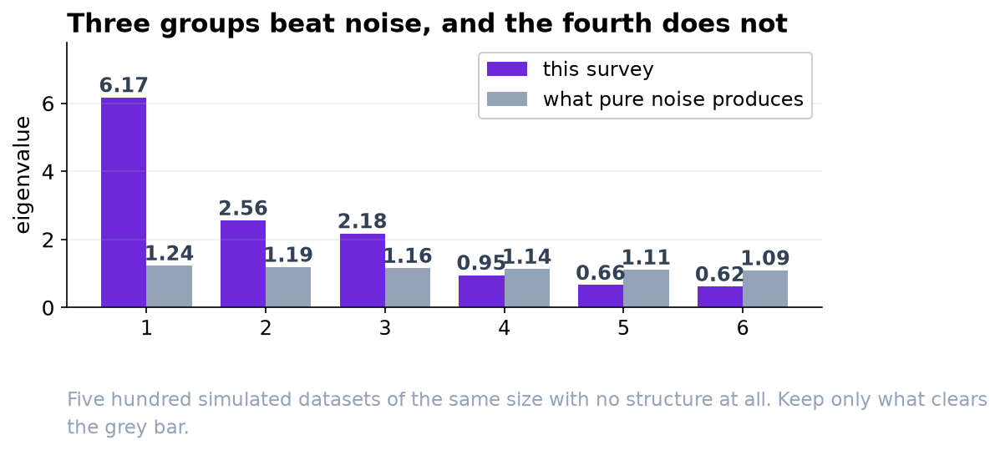
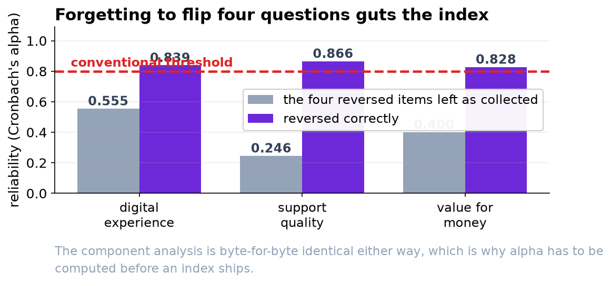

Three Numbers for the Dashboard, Not One and Not Twenty.
The battery measures three separate things. Averaging them into a single score would hide whichever one is moving, which is the only thing anybody wants the dashboard for.
Recommendation
Report three indices, each the plain average of its items. Digital experience (6 items), support quality (7 items), value for money (4 items). Three of the twenty questions do not belong in any index and should be reported separately or dropped. Every index is a straight average, so the reporting tool can compute it without anyone re-running an analysis.
Is it one thing or three?
Three. The twenty questions fall into three groups that move together internally and move somewhat independently of each other. The evidence for exactly three, rather than two or four, is a simulation: we generated five hundred datasets the same size and shape as this one but with no structure at all, and kept only the groupings that were stronger than what pure noise produces.
| Index | What it covers | Items |
|---|---|---|
| Digital experience | The app and the website: ease of use, speed, finding things, checkout, account setup | q01-q06 |
| Support quality | Dealing with a person: knowledge, courtesy, wait, being kept informed, resolution | q08-q14 |
| Value for money | Price and plan: fairness, worth, clarity of fees, plan choice | q15-q18 |
A single combined score is not wrong so much as useless for your purpose. It would move when any of the three moved and would never tell you which, and the three are only loosely related to each other.

The three questions that do not fit
| Question | What we found | What to do |
|---|---|---|
| q07 'It is easy to reach a person from inside the app' | It is genuinely about both the app and support, almost equally | Report on its own, not inside an index |
| q19 'Compared with alternatives, this is good value' | Mostly value, but it also picks up the digital experience | Leave out of the index |
| q20 'I enjoy the company's advertising' | Unrelated to everything else in the battery | Drop it, and consider dropping the question |
We want to be explicit about q20 because dropping a question is the kind of decision that can be abused. It is not being dropped for giving an inconvenient answer. It simply does not move with anything else here, which means it is not measuring the service, and including it would only add noise to the value index.
A warning about the four reversed questions
Four questions are worded negatively: agreeing with 'I wait too long to reach someone' is bad news, on the same 1-to-5 agreement scale where agreeing with 'staff treat me courteously' is good news. They have to be flipped before being averaged in.
If the reporting tool averages those four as they are collected, they cancel out the questions next to them. The support index would go from a reliable measure to close to useless, and nothing about the output would look obviously wrong. Whoever builds this in the tool needs the flip written into the specification, and the build should be checked against the numbers in the technical report.

Why plain averages rather than a weighted score
We tested a statistically optimal weighting against a plain average of each block. They rank respondents almost identically, and they predict overall satisfaction and willingness to recommend equally well. The weighted version would have to be regenerated by an analyst every time the data updates.
So the recommendation is the simple thing, and the analysis is what tells you it is safe to use the simple thing. It also tells you which items go in which average, which was the actual question.